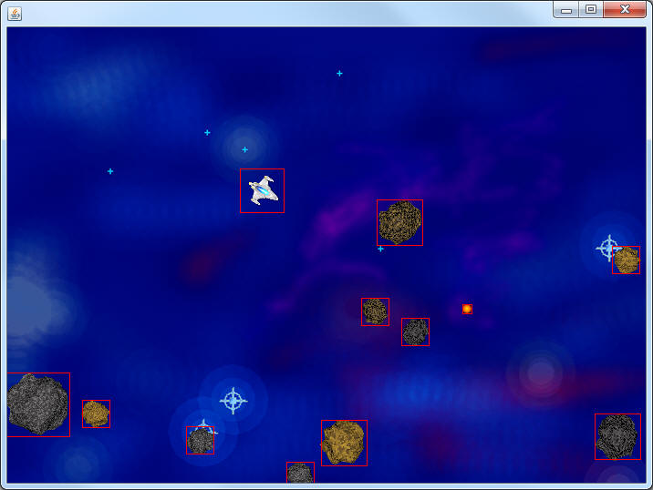

Collision
Now that we've got the Asteroids, the Ship, and the Bullets flying arond the screen it's time to make them interact a little bit. We're going to get a little help from the BoundingBox class (go and get it from the Sprite project).
Go to the AsteroidSprite class and add a method named getHitBox that returns a BoundingBox that uses the same coordinates that you use for painting the various pictures.
For the sake of testing it might be useful to be able to paint the hitbox over the image of the object. Add a boolean instance field named paintHitBox and initialize it to true. Then, at the very end of the paintSelf method, if the boolean is true, get the hitbox, extract the x,y,width, and height and paint the Rectangle.
If you run the program, it should look something like the image below.

There is a minor problem using the hitboxes with the exact x,y,width, and height of the image. The hitbox goes outside of the boundary of the image. This will cause sprites to 'hit' other sprites when they don't look like they should.
Optional: A better design for the hitbox would be to have a square that's smaller than the image. This way the far outside corners of the Rectangle won't jut out and hit things. Override the getHitBox method and modify it to make a better fit. For example, if I wanted the hitbox to be 5 shorter on each side I might add 5 more to the x and y, and shorten the width and height by 10.
Interacting the Asteroids and the Bullets:
Add a method with the following header:
public void bulletsVsAsteroids()
which will be responsible for checking if any of the bullets collide with the Asteroids and removing them from the ArrayList if they do. This will require a nested for loop because you're looping through both the list of Bullets and the list of Asteroids. The key to checking if they overlap is to get their hitboxes and call BoundingBox's overlaps method, which takes in another BoundingBox and returns true if they overlap. For now, all you have to do is remove each of them from their ArrayList and they will essentially no longer exist in the game. It is important that you return from the method the first time you find a Bullet hitting and Asteroid, otherwise there will be cases where the Bullet is removed multiple times from the same ArrayList which can cause IndexOutOfBoundsExceptions.
Now modify the onTimerTick method so that it calls bulletsVsAsteroids() at some point.
Run the program and shoot a few Asteroids. If done right, the Bullet and the Asteroid will suddenly disappear when they strike each other. When you feel comfortable that it works, you may set the paintHitBox boolean back to false.